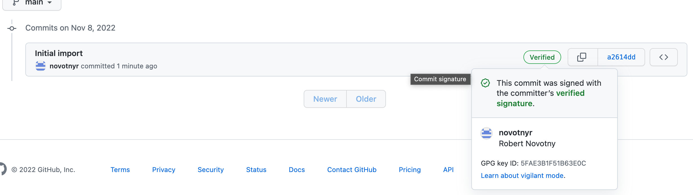
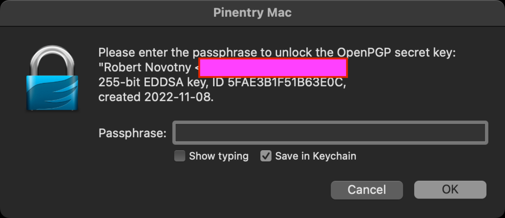
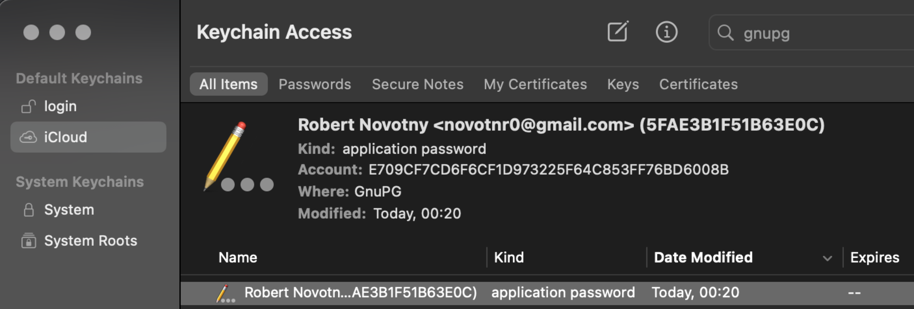
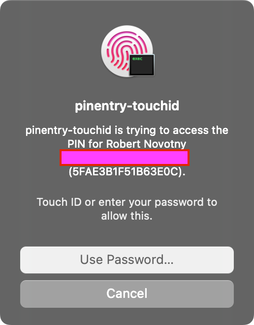

brew install gpgNainštalujme gpg:
Nagenerujeme pár kľúčov:
gpg --full-generate-keyVznikne adresár v domovskom priečinku ~/.gnupg.
Pozrime jeho výpis.
ls ~/.gnupg
Vypíšme kľúče:
gpg --list-secret-keys --keyid-format=longUvidíme:
/Users/novotnyr/.gnupg/pubring.kbx
----------------------------------
sec ed25519/5FAE3B1F51B63E0C 2022-11-08 [SC]
15E5B5BA00311CEF2DD287D55FAE3B1F51B63E0C
uid [ultimate] Robert Novotny <redacted@gmail.com>
ssb cv25519/3631AF913E983143 2022-11-08 [E]
Identifikátor je 5FAE3B1F51B63E0C.
Exportnime do súboru
gpg --armor --export 5FAE3B1F51B63E0C
Export pridáme do UI GItHubu: GitHub Settings > Keys
Overme, že podpisovanie funguje v základe:
echo "test" | gpg --clearsign
gpg si poprosí heslo k privátnemu kľúču cez dialóg v termináli a následne vypíše napr.
-----BEGIN PGP SIGNED MESSAGE----- Hash: SHA512 test -----BEGIN PGP SIGNATURE----- iHUEARYKAB0WIQQV5bW6ADEc7y3Sh9VfrjsfUbY+DAUCY2wpmgAKCRBfrjsfUbY+ DLPXAPwN14IsjXqdvYbLVkTE50iwFNtRa5dLiVSHBW0jEftHQAD/W32zK7mORXjw G9XM7aQmy1aw03bQ0gF58ZsGoorE3wg= =ysBj -----END PGP SIGNATURE------
Možno uvidíme chybu s ioctl:
gpg: signing failed: Inappropriate ioctl for device gpg: [stdin]: clear-sign failed: Inappropriate ioctl for device
Tá istá chyba nastáva, ak spustíme git s podpisovaní:
error: gpg failed to sign the data fatal: failed to write commit object
Exportnime terminál pre gpg.
export GPG_TTY=$(tty)
Zopakujme test. Ak uspeje, komitnime:
git commit -S -m "Initial import"
Prepínač -S zapne podpisovanie komitov.
Pushnime komity:
git push
Uvidím verifikovaný komit:

|
Tip
|
Exportovanie GPG_TTY dodajme do profilu v shelli, napr. do .zshrc.
|
Bonusové príkazy
Reštart agenta
Reštart agenta, aby si pýtal heslo:
gpgconf --kill gpg-agent
Pinentry pre Mac
Príkaz pinentry si dokáže pýtať heslo v grafickom okne.
Pre MacOS:
brew install pinentry-mac
Konfigurácia:
echo 'use-agent' > ~/.gnupg/gpg.conf echo "pinentry-program $(brew --prefix)/bin/pinentry-mac" >> ~/.gnupg/gpg-agent.conf
Pre istotu reštartnime:
gpgconf --kill gpg-agent
Následne opakujme šifrovanie. Namiesto textového políčka uvidíme:

V Keychaine uvidíme záznamy po vyhľadaní GnuPG:

Pinentry pre odtlačok prsta
Doinštalujme:
brew tap jorgelbg/tap brew install pinentry-touchid
Zariaďme sa podľa inštrukcií homebrew:
-
Založenie symlinku:
/usr/local/opt/pinentry-touchid/bin/pinentry-touchid -fix
-
Úprava ~/.gnupg/gpg-agent.conf:
pinentry-program /usr/local/opt/pinentry-touchid/bin/pinentry-touchid
-
Reload agenta
gpg-connect-agent reloadagent /bye
-
Zákaz „Save in Keychain“
defaults write org.gpgtools.common DisableKeychain -bool yes
-
Skusmo podpíšme. Ak sa systém spýta na povolenie ku keychainu, tak „Always Allow“.
